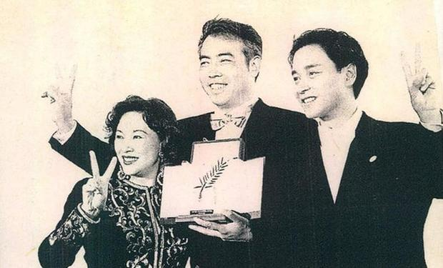

华语力量在戛纳的N中活法

第70届戛纳电影节海报
时光网特稿 戛纳国际电影节，几乎是每年5月的高频词。从宣布入围名单、到开幕红毯、以及最终的评选结果，世界不约而同把聚光灯打向戛纳这个小城，每个观众也用自己的方式关注着远在法国的电影盛宴。1939年创办、1946年重启、1968年停摆，戛纳电影节严格上说这是他走过的第70周年，也是戛纳在政治、宗教、商业等因素下继续为艺术坚持的第70个年头。
作为当今世界最具有影响力、最顶尖的国际电影节，与威尼斯国际电影节、柏林国际电影节并称为欧洲三大国际电影节，同时与美国的奥斯卡平衡着优质影片的输送。一个电影节的兴衰不仅取决于其硬件设施，更重要的是电影节所尊崇和倡导的艺术价值。
70年的光影流年，一位位优秀导演在戛纳受到认可，诚如巴赞所说，为对照比较提供机会，戛纳就是电影艺术交流的载体。多年来，华语电影、华语影人在戛纳电影节上都有不俗表现。在《霸王别姬》成为首部获金棕榈大奖的华语影片，直到2010年，连续十八年都有华语片入围竞赛单元。但明显。近几年华语优秀艺术影片出现断茬。

《霸王别姬》摘得金棕榈
立足于本届戛纳，我们试图透过在戛纳的电影人：洪金宝、范冰冰、杨子珊、李睿珺、江志强等人，从他们在华语电影中所擅长的领域，用他们身上承载的符号来叙述过去70年里华语电影和电影人在戛纳的力量。探究金棕榈叶下的华语力量如何去蓬勃发展、到目前的后力不足，又该何去何从。
戛纳对影迷意味着有了一把判断电影好坏的标尺，虽不用过度迷恋奖项，但戛纳一致保持自身对艺术的要求。但对于资方来看，戛纳是一个电影版权交易和推广的重要市场。去年，戛纳电影市场共有来自118个国家11900人参加，985部电影组织了共计1426场展映，交易额达10亿美元（8.9亿欧元）。今年的数据还不明确，但从各国电影市场的蓬勃发展，有望创下新高。华语电影显然已将戛纳编程了一个争夺市场、发展自己的地方，甚至不惜重金买下重要广告位。
戛纳展会展位
在“电影市场”内，中国电影发行商、投资商和片商也开始占据越来越大的摊位，举办越来越豪华的宴会，守在门口的保安们会突然开口说“你好”，电影节官网的中文版也给人们提供了极大的方便。种种迹象表明，中国电影已经深入戛纳的诸多角落。
除了电影版权交易，中国电影各种推介会也是戛纳的一大“亮点”。随着电影节开幕，中国影人举办的各类推介酒会也将陆续上演，例如5月18日，上海国际电影节将在格兰德大酒店举行推介会；5月22日，贾樟柯也会举办“平遥国际电影节”推介会。
中国电影在戛纳的舞台上日渐落寞，但在戛纳的市场里却不断升温，甚至不惜重金也要去戛纳市场“镀金”，而忽略了影片质量本身，买入和卖出形式成严重逆差。关于华语力量在戛纳，我们进行了部分浅析。今年的金棕榈将由谁摘得，而明年的华语电影能否进入主竞赛单元？一起拭目以待，同时希望华语片能重获当年风采。
（作者：乐子 编辑：乐子）

相关电影/影人
PC版
丨
客户端下载
丨
意见反馈
丨
帮助中心
Copyright 2006-2017 Mtime.com Inc.All rights reserved